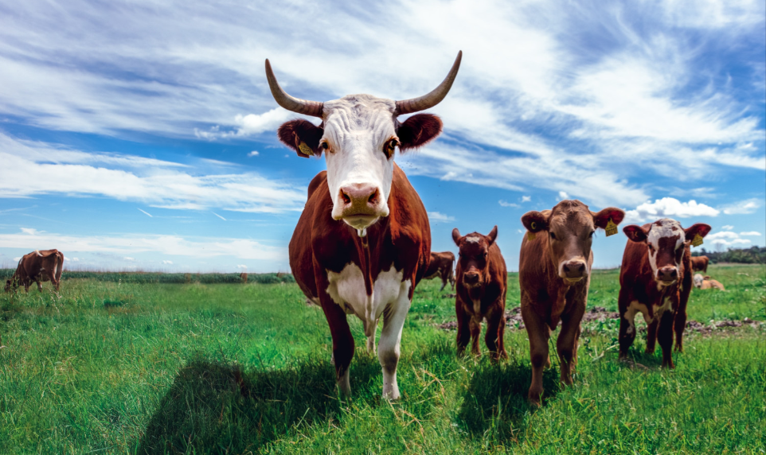
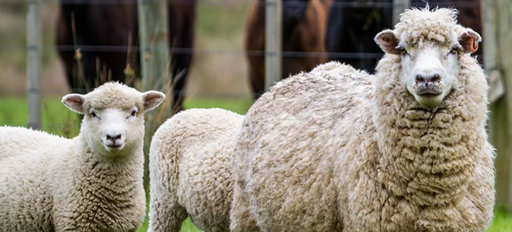
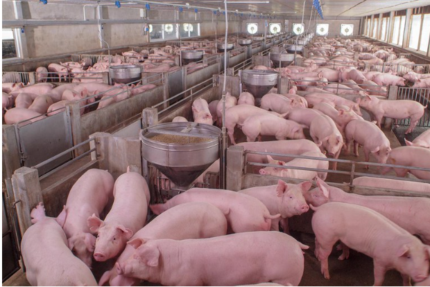

Address
PO BOX 57811, 00200,City Square,
Nairobi, Kenya
To conduct agricultural research, through the application of science, technology and innovation to catalyze sustainable growth and development in agriculture and livestock Product Value Chain.
KALRO is a corporate body created under the Kenya Agricultural and Livestock Research
Act of 2013 to establish suitable legal and institutional framework for coordination
of agricultural research in Kenya with the following goals:
• Promote, streamline, co-ordinate and regulate research in crops, livestock, genetic
resources and biotechnology in Kenya.
• Expedite equitable access to research information, resources and technology and
promote the application of research findings and technology in the field of agriculture.
Excellence in agricultural and livestock research toward transformed livelihoods
To conduct agricultural research through the application of science, technology, and innovation to catalyze sustainable growth and development in agriculture and livestock Product Value Chains
To contribute to the growth of the agricultural sector through research coordination and regulation; technology and innovation development; and catalyzing transfer and utilization of agricultural research outputs.
The mandate of KALRO as stated in the Act is to:
a) Promote, streamline, coordinate, and regulate research in crops, livestock, genetic resources, and biotechnology;
b) Promote, streamline, coordinate, and regulate research in crops and animal diseases;
c) Expedite equitable access to research information, resources, and technology and
promote the application of the research findings and technology in the field
of agriculture
There are several departments in kalro including crops, livestock and institutes
About the Department
Crop production plays an important role in Kenya’s economic development as a
major source of income, employment creation, and saving on foreign exchange
expenditure through import substitution. This sub-sector is a major occupation
of the rural population and accounts for a large share of the total
agricultural output. The Crops sub-sector provides national food and
nutritional security and income generation through local and export markets.
This sub-sector plays a significant role in the delivery of the Millennium
Development Goals of reducing poverty and hunger, as well as meeting the
aspirations encapsulated in various Kenya Government policy documents such
as Vision 2030 (GoK, 2008) and the Agriculture Sector Development Strategy
(2009-2014). Currently, the annual crop production stands at 6 million tons
of food crops, 4.2 million tons of horticultural crops, and 500,000 tons of
industrial crops, all supporting 10 million households. Crop diseases, pests,
and weeds greatly reduce the potential of these crop categories in quality
and quantity. Currently, losses due to these constraints are estimated at 40%.
Efforts to increase production and reduce these losses take cognizance of the
need to conserve the environment.
Some crops include:
Sorghum, Beans, Maize
About the Department
The livestock sub-sector contributes over 30% of the farm gate value of
agricultural commodities, about 10% of the national GDP and at least 50% of
the agricultural GDP. The sector employs about 50% of the agricultural labour
force. Domestic livestock also supplies the local requirements of meat, milk,
dairy products and other livestock products while accounting for about 30%
of the total marketed agricultural products. In the ASALs pastoralism,
ranching and agro-pastoralism are practised. In agro-pastoralism, the
farmers integrate crop and livestock production and crop residues form
a significant proportion of livestock feeds.Livestock comprises dairy
cattle, goats, camels and beef cattle, small ruminants, non-ruminants,
poultry and emerging livestock such as quail and rabbits. Milk production
in the country includes 4.6 billion litres from cattle, 6.4 million
litres from goats and 340 million litres from camels providing an
important source of livelihoods to Kenyans.Production constraints include
low productivity, poor breed characterisation, inadequate breeding services,
poor animal husbandry, inadequate extension and advisory services, inadequate
feeds and feeding, disease challenges, high cost of inputs and poor access to
markets and inadequate integration of industry players.
Some livestock include:
  Cow, Sheep, Swine
About the Departments
The Kenya Agricultural and Livestock Research Organization is composed of
semi-autonomous institutes established under the Kenya Agricultural and
Livestock Research Act of 2013. This Act empowers the Cabinet secretary,
in consultation with the KALRO Board to establish research institutes that
may be necessary for the performance of KALRO’s functions under the Act.
The Act also recognises the role of public universities in agricultural
research and provides for partnerships with them as associate research
institutes. Currently, sixteen research institutes have been established.
Under the Act, the functions of the research institutes under KALRO shall be to:
1. Advise on, and develop appropriate systems to promote balanced,
diversified, and sustained agricultural development and to optimize agricultural
production through adaptive and investigative research; and
2. Facilitate the use of improved production technology, and establish
adequate feedback systems from agricultural producers in order to achieve and
maintain national self-sufficiency and export capacities in agricultural
products.It is expected that the Institutes shall conduct research in their respective
value chains and disseminate appropriate information and technologies to intended users.
Although the key mandate of each institute will be restricted, the various research centers
under the administration of each Institute may manage research projects covering multiple
value chains and commodities.
Some Institutes include:
Arid and RangeLands, Horticulture, Veterinary Research Institutes
The TELA Maize Project is a public-private partnership that is working towards initiating the commercialization of transgenic insect-protected and later drought-tolerant maize varieties to enhance food security in Sub-Saharan Africa. The word “TELA” is derived from the Latin word TUTELA which means “Protection.” The TELA Maize Project builds on progress made from a decade of excellent breeding work under the Water Efficient Maize for Africa (WEMA) Project.WEMA’s purpose was to develop drought-tolerant and insect-protected maize varieties for farmers to produce more reliable harvests under moderate drought conditions and protect maize from insects. The project used both conventional advanced plant breeding and biotechnology in the development of the maize varieties. The TELA Project is a continuation of the transgenic WEMA component.
Kenya Climate-Smart Agriculture Project (KCSAP) is a Government of Kenya/World Bank-supported project under the State Department for Crops Development in the Ministry of Agriculture, Livestock, Fisheries and Irrigation (MoALF&I). The project is implemented within five components: Component 1: Upscaling Climate-Smart Agricultural Practices; Component 2: Strengthening Climate-Smart Agricultural Research and Seed Systems; Component 3: Supporting Agro-weather, Market, Climate, and Advisory Services; Component 4: Project Coordination and Management; Component 5: Contingency Emergency Response. KCSAP aims to achieve three “triple wins”; 1) Sustainably increasing productivity; 2) Building resilience to climate risks (adaptation); 3) Reducing/removing Greenhouse Gas Emissions (mitigation). These will be achieved by focusing primarily on: (i) improving water/soil management, especially within smallholder crop and livestock production systems; (ii) promoting sustainable, community‐driven rangeland management and improved access to quality livestock services in ASALs; (iii) supporting the generation and dissemination of improved agricultural TIMPs and building sustainable seed systems; and (iv) enhancing access to quality agro-weather, climate, advisory, and market information services among farmers/herders for improved decision making.
Share your view ,comment or ask any question.We are here to help you.
PO BOX 57811, 00200,City Square,
Nairobi, Kenya
Direct Line :
+254722206986, +254722206986,
+254722206988, +254730707000